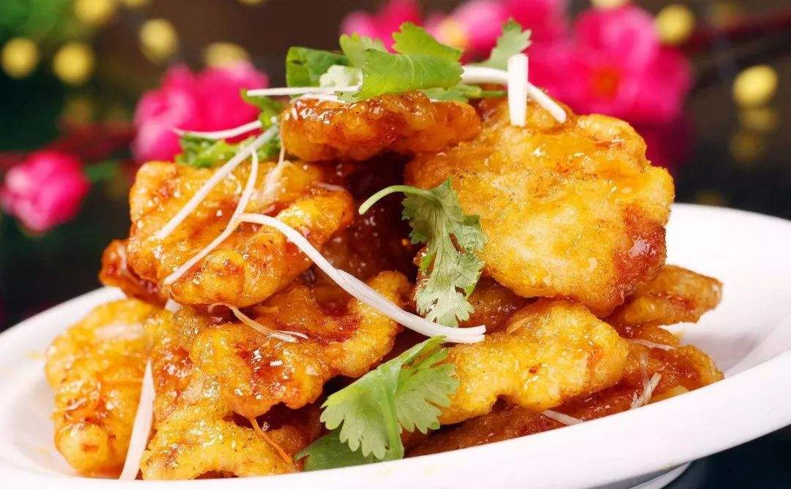
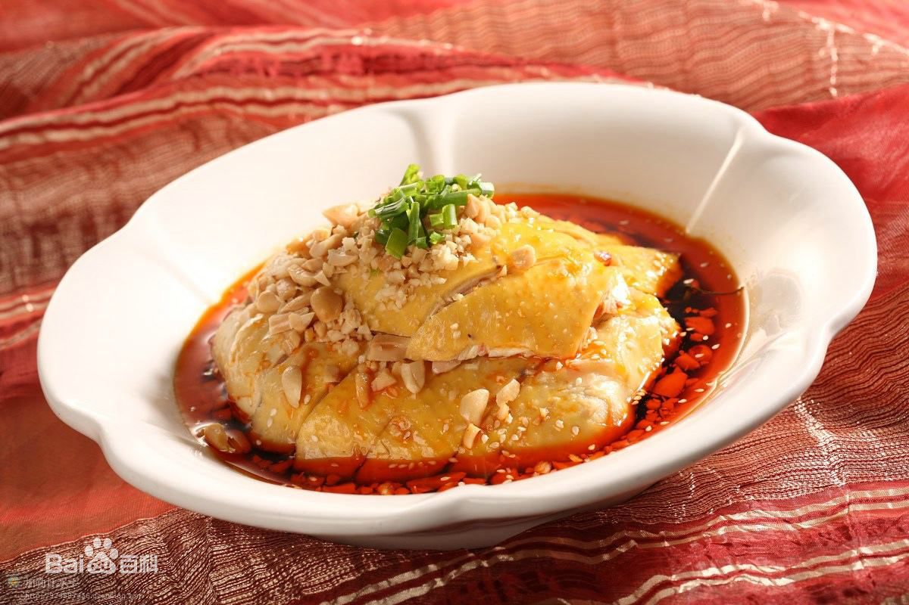
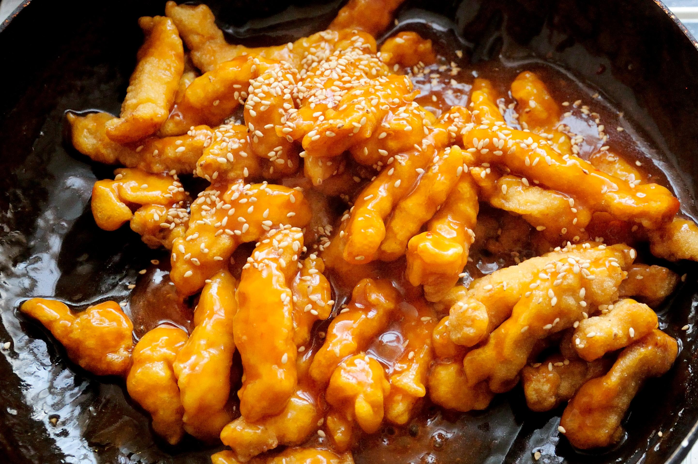
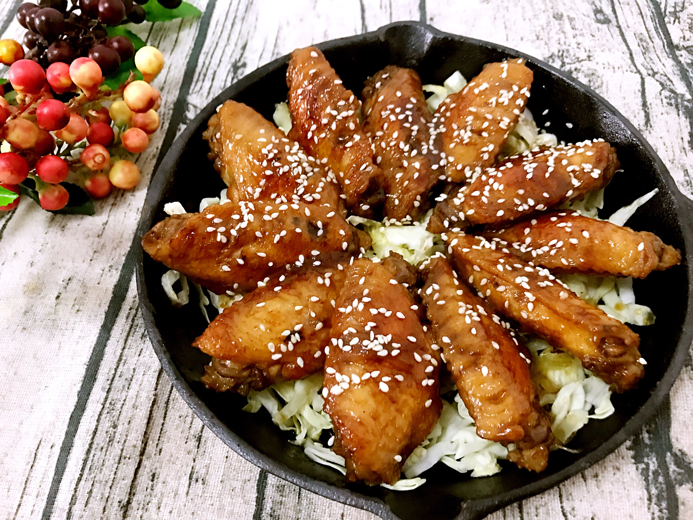
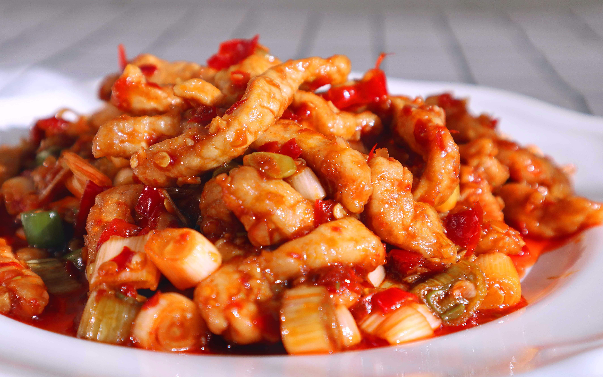
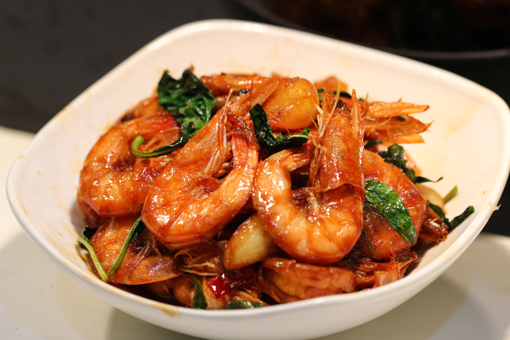

Recipes
Recipes
-
Double Cooked Pork SlicesDouble Cooked Pork Slices is to adapt to the taste of foreign guests, the salty taste of "burnt meat strips" into a sweet and sour dish.
-
Steamed Chicken with Chili SauceSteamed Chicken with Chili Sauce is a cold dish, rich in seasoning, set spicy fresh fragrant and cool in a body.It's worth a try!
-
Sweet and sour fillet of porkPork tender fillet outside crispy, sweet and sour to eat, people's appetite greatly increased. It's a good dinner dish which is very popular with children.
-
Cola Chicken WingsCoke chicken wings are made from chicken wings and cola. They are simple and convenient to make and have a delicious and sweet taste. It is very suitable for family meals.
-
Yu-Shiang Shredded PorkFish-flavored pork shredded is one of the main traditional flavors of Sichuan dishes. The ready-made vegetable has fish flavor, and its flavor is made of condiments.
-
Braised PrawnsOil-baked prawns, using the unique oil-baked techniques of Lucai, are complementary to each other in four flavors: fresh, sweet and salty, with endless aftertaste.